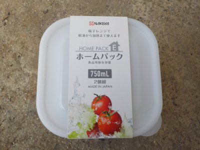
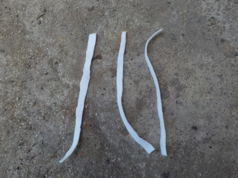
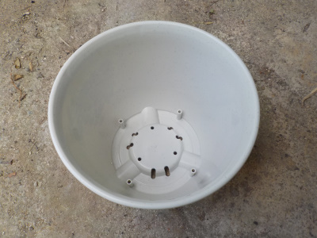
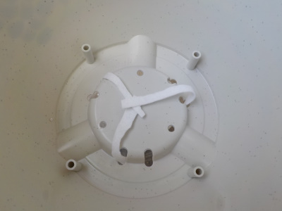
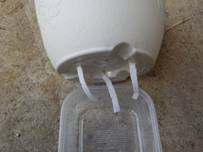
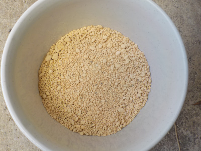
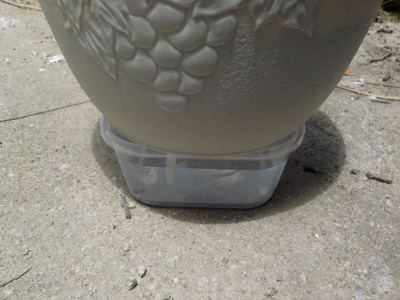
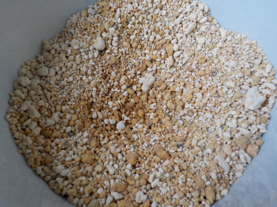
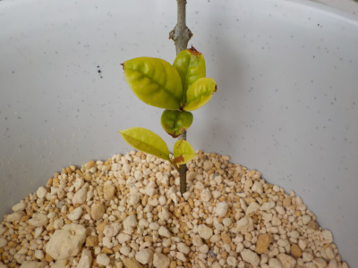

100円均一アイテムを使って底面給水鉢を作りました。
2021/07/03
挿し木を簡単をするために底面給水鉢を買おうと思ったんですが、近くのホームセンターでは小さいのに400円とか500円くらいの値段がしてて、高くて買う気がしませんでした。
シクラメン用の鉢か300円くらいであれば買ったんですが、店舗で見つけることが出来ませんでした。
しょうがないので低価格で自作することにします。
材料は100均のセリアで調達しました。

土台で水を入れるタッパーです。
2個100円と3個100円のものとで迷いましたが、大容量と上に鉢を乗せた時の安定感を考え2個100円にしました。
750ミリリットルもあるので、多分水切れすることはないでしょう。

フェルトの布をハサミで切ってひも状にしたものです。
このヒモで水を鉢に供給します。

鉢は安くて大きいものにしました。
私の行ったお店だと、100円ではこの8号鉢が一番大きかったです。
下に置くタッパーが白いので、違和感がないように白い鉢を選びました。

鉢の底穴にフェルトのヒモを通します。

フェルトのヒモは、タッパーの底まで届く長さにします。

鉢が大きいので土の量は半分にしました。
土は鹿沼土を使用しました。

水を入れたタッパーの上に鉢を乗せて完成です。

5時間くらい放置したら、水分が上の方まで上がってきました。
表面は乾燥していましたが、ちょっと掘ったら湿気った土になっていました。
ちゃんと底面給水鉢として機能していますね。

試しにキンモクセイを1本挿し木しました。
まだまだスペースは沢山あるので、色々挿し木が楽しめそうです。
鉢110円、タッパー110円、フェルト110円で計330円です。タッパーは1個、フェルトは沢山余っているので、鉢を1個買えばもう一つ作れます。
8号鉢の底面給水鉢が440円で2個作れるので、安く出来たんじゃないかと思います。
強風で倒れる可能性があるので、壁際に置いて使おうと思います。